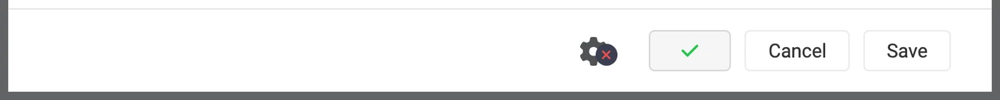
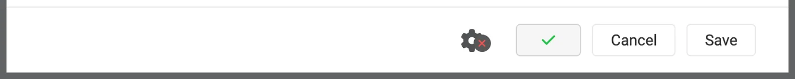

Sonarr dan Radarr, langkah demi langkah
Ada tiga cara memakai Sonarr dan Radarr dengan zurg. Pilih siapa yang mencari di zurg atau di *arrs. Lihat mana yang harus dipilih.
Dua cara pertama bisa berjalan berdampingan. Keduanya memakai folder __magic__ yang sama.
Arahkan Sonarr dan Radarr ke zurg untuk mengambil dari Usenet tanpa client. Tidak ada video penuh yang diunduh atau di-unpack saat proses grab. NZB dan cache tetap memakai disk. Halaman ini membahas Usenet. Endpoint torrent memakai client yang sama dan berbagi folder yang sama. Lihat Sonarr & Radarr untuk torrent.
Semua yang ada di bawah ini diambil dari zurg nightly-993-g99bcf9a4, Sonarr 4.0.19.2979, dan Radarr 6.3.0.10514, pada instalasi langsung dengan akun Usenet sungguhan. Nama host dan user sudah diganti menjadi you@zurg-server. Nama indexer tertulis my-indexer. API key dan jumlah library hanya ilustrasi. Tidak ada bagian lain dari output yang diambil yang diubah. Baris log torbox_nzb dibaca dari source code zurg pada 2026-11-09, bukan diambil secara langsung.
Sebelum kamu mulai
Tiga hal ini harus benar. Cek ketiganya sekarang. Setiap masalah nanti akan muncul sebagai error yang kelihatannya tidak berhubungan.
- zurg harus punya provider
nzbatautorbox_nzb(TorBox Pro). Tanpa salah satunya, tidak ada yang membaca apa yang ditulis endpoint, dan setiap job dilaporkan Failed setelah 30 menit, saat zurg menyerah menunggu job itu muncul di library. Lihat Usenet, atau Usenet yang di-host TorBox untuktorbox_nzb. magic.enabledbernilaitrue. Tanpa ini, completed directory tidak ada dan setiap impor gagal. Lihat__magic__.- Mount terlihat oleh *arr di path yang dilaporkan zurg. Kalau Sonarr berjalan di container, baca
langkah 8 sebelum mengonfigurasi apa pun. Kalau terpasang sebagai aplikasi biasa di mesin yang sama, ia melihat mount di lokasi zurg memasangnya, dengan satu catatan untuk tiap sistem:- Linux: *arr yang berjalan sebagai user berbeda dari zurg akan melihat folder kosong sampai
user_allow_otherdiaktifkan. Lihat pengaturan Linux. - macOS: jalankan sebagai user yang sama dengan zurg. Mount-nya ada di
/Volumes/Zurgkecuali kamu mengubahmount_path. - Windows: jalankan Sonarr dan Radarr sebagai aplikasi tray, yang ditawarkan installer mereka, bukan sebagai layanan Windows. Drive
Z:milik zurg ada di sesi tempat kamu login, dan layanan berjalan di luar sesi itu, jadi ia tidak melihat drive tersebut. Lihat aturan sesi.
- Linux: *arr yang berjalan sebagai user berbeda dari zurg akan melihat folder kosong sampai
Cek dua yang pertama langsung dari file config, di working directory zurg. Di Windows, buka config.yml di Notepad.
$ grep -A6 '^providers:' config.yml
providers:
- type: nzb
nntp:
host: news.example.com
port: 563
tls: true
username: <redacted>
password: <redacted>
$ grep -A4 '^magic:' config.yml
magic:
enabled: true
allow_delete: false
sidecar_max_mb: 32
sidecar_budget_mb: 2048allow_delete: false adalah default yang aman dan tidak memengaruhi impor. Delete di dalam __magic__ hanya menyembunyikan entri, bukan menghapus konten dari akun.
1. Nyalakan endpoint-nya
Ada dua cara, hasilnya sama. Keduanya menulis ke config.yml dan keduanya perlu di-restart: rute yang melayani __magic__ dan endpoint SABnzbd didaftarkan sekali saja, saat zurg dijalankan.
Opsi A — dashboard
Buka dashboard zurg, klik Config, lalu scroll ke __magic__ & Download Clients. Aktifkan Serve __magic__ dan SABnzbd Endpoint, lalu atur SABnzbd Categories ke tv, movies.

Config adalah tempat pengaturannya. Magic adalah tempat kamu nanti melihat grab yang masuk.

Kosongkan SABnzbd Completed Directory kecuali *arr kamu me-mount zurg di lokasi yang berbeda dari tempat zurg berjalan. Lihat
Opsi B — config.yml
Tambahkan blok itu secara manual lalu restart zurg.
magic:
enabled: true
sabnzbd:
enabled: true
api_key: "" # empty = zurg generates one and keeps it
categories: [tv, movies]
complete_dir: "" # empty = <mount_path>/__magic__/__all__Kategori bukan folder. Semuanya mengarah ke tempat yang sama. Folder sebuah job adalah folder rilis itu sendiri di bawah __magic__/__all__. Daftar ini hanya ada supaya Sonarr dan Radarr berhenti memberi peringatan tentang kategori yang tidak bisa mereka temukan. Kalau kategori Sonarr kamu tv, maka tv harus ada di daftar ini.
Restart zurg, lalu pastikan provider-nya sudah terpasang:

Cukup satu baris nzb atau torbox_nzb saja untuk endpoint itu.
2. Cari API key-nya
Kunci API adalah satu-satunya autentikasi di endpoint ini, jadi pastikan benar sejak awal dan jangan pernah menempelkannya di tempat publik.
Jika kamu mengosongkan api_key, zurg membuat satu saat pertama kali dijalankan dan menyimpannya di data/sabnzbd-apikey:
$ cat data/sabnzbd-apikey
0123456789abcdef0123456789abcdef
Contoh saja, kunci kamu akan berbeda. File ini tetap ada setelah restart, jadi kunci tidak berubah setelah dibuat.
Jika kamu mengisi api_key sendiri, kunci itu ada di config.yml dan tidak ada file yang dibuat. Dashboard memberi tahu kamu kondisi yang mana di bagian bawah blok pada langkah 1. Teksnya berupa pinned in config.yml under sabnzbd.api_key atau generated and kept in data/sabnzbd-apikey.
Endpoint ini berada di luar autentikasi dasar zurg. Sonarr dan Radarr tidak pernah mengirim autentikasi dasar ke download client, dan lapisan HTTP mereka mengubah 401 menjadi "unable to connect" tanpa petunjuk apa pun yang bisa ditindaklanjuti. Karena itu zurg sengaja mengecualikan /api. Kunci API adalah satu-satunya penjaga. Perlakukan port ini sama seperti bagian zurg lainnya: pakai di jaringan tepercaya, atau letakkan di balik sesuatu yang melindunginya.
3. Pastikan ia merespons
Lakukan ini sebelum menyentuh Sonarr. Hanya butuh sepuluh detik, dan ini memisahkan "zurg yang salah" dari "*arr yang salah" untuk seluruh proses setup.
$ SAB=0123456789abcdef0123456789abcdef
$ ZURG=192.168.88.245:9996
$ curl -s "http://$ZURG/api?mode=version&apikey=$SAB&output=json"
{"version":"4.5.1"}
$ curl -s "http://$ZURG/api?mode=get_config&apikey=$SAB&output=json" \
| jq '.config.misc.complete_dir, [.config.categories[].name]'
"/mnt/zurg_usenet/__magic__/__all__"
[ "*", "tv", "movies" ]Di PowerShell. Ketik curl.exe, bukan curl: curl di Windows PowerShell adalah perintah yang berbeda.
PS> $SAB = "0123456789abcdef0123456789abcdef"
PS> $ZURG = "192.168.88.245:9996"
PS> curl.exe -s "http://$ZURG/api?mode=version&apikey=$SAB&output=json"
{"version":"4.5.1"}
PS> (Invoke-RestMethod "http://$ZURG/api?mode=get_config&apikey=$SAB&output=json").config.misc.complete_dir
Z:/__magic__/__all__complete_dir adalah path yang akan diberikan zurg ke client. Cek sekarang bahwa itu path yang mereka bisa buka.
Lalu cek apakah key yang salah benar-benar ditolak (di Windows, pakai curl.exe dengan URL yang sama):
$ curl -s "http://$ZURG/api?mode=queue&apikey=wrongkey&output=json"
{"status":false,"error":"API Key Incorrect"}
$ curl -s "http://$ZURG/api?mode=queue&output=json"
{"status":false,"error":"API Key Required"}mode=version bukan tes autentikasi. Endpoint ini tetap merespons {"version":"4.5.1"} meskipun key-nya salah. Begitulah cara SABnzbd asli bekerja, dan zurg meniru hal itu. Pakai mode=queue atau mode=get_config kalau yang ingin kamu tes memang key-nya.
Kedua bentuk URL ini bisa dipakai, jadi keduanya boleh diisi di field URL Base pada client:
Kalau /api mengembalikan 404 biasa, berarti sabnzbd.enabled masih false atau zurg belum di-restart sejak kamu mengubahnya.
4. Buat root folder
Buat folder-folder itu dulu sebelum menambahkannya, karena dialog Add Root Folder milik *arr menelusuri filesystem yang sedang berjalan dan tidak akan menawarkan folder yang belum ada.
$ mkdir -p /mnt/zurg_usenet/__magic__/tv /mnt/zurg_usenet/__magic__/movies
$ ls -d /mnt/zurg_usenet/__magic__/tv /mnt/zurg_usenet/__magic__/movies
/mnt/zurg_usenet/__magic__/movies
/mnt/zurg_usenet/__magic__/tvPS> New-Item -ItemType Directory -Force Z:\__magic__\tv, Z:\__magic__\moviesAtau buat kedua folder itu di Explorer.
Ganti mount_path dengan path Anda sendiri, bukan /mnt/zurg_usenet. Jika tidak diatur, nilainya /mnt/zurg di Linux, /Volumes/Zurg di macOS, dan Z: di Windows. Nama folder bebas Anda pilih; tv dan movies hanya menyesuaikan kategorinya.
Root folder harus berada di samping direktori completed, bukan di dalamnya dan bukan di atasnya. zurg memberikan klien __magic__/__all__, yaitu pustaka Anda seperti yang tercantum di __all__. Root folder Anda berada di samping folder itu, yaitu di __magic__/tv dan __magic__/movies. Bukan __magic__/__all__, bukan __magic__ itu sendiri, dan bukan /mnt/zurg_usenet. Kedua klien akan memunculkan health check jika root folder adalah folder output download client, dan Radarr juga memunculkannya jika root folder berisi folder output tersebut. Folder yang bersaudara tidak memicu keduanya, dan impor manual yang diarahkan ke direktori completed hanya akan memiliki satu rilis untuk dilihat, bukan seluruh pustaka Anda.
Begini tampilannya jika salah. Keduanya nyata, diambil dari dua klien tersebut. Keduanya diambil sebelum direktori completed dipindahkan ke __magic__/__all__, jadi path di dalam gambar satu tingkat lebih tinggi dari milik Anda. Kedua aturan yang ditampilkan sama dengan aturan di atas:

Sonarr dengan direktori completed itu sendiri ditambahkan sebagai root folder. Sonarr memberi peringatan karena root folder adalah folder output.

Radarr dengan /mnt/zurg_usenet ditambahkan. Radarr juga memberi peringatan untuk induk folder itu, yang tidak dilakukan Sonarr. Pindahkan root folder ke samping direktori completed, dan kedua peringatan akan hilang.
5. Tambahkan client di Sonarr
Sonarr yang baru dipasang langsung menampilkan layar first-run yang menghalangi semua hal. Pilih Forms (Login Page), isi username dan password, lalu klik Save.

Kamu tidak bisa lanjut sampai Authentication Method diisi dengan selain None.

Setelah Save, kamu akan keluar sekali dan diarahkan ke halaman login.

Settings → Download Clients
Buka Settings → Download Clients. Di instalasi baru, tidak ada apa-apa di sini selain kartu +.

Klik + di bawah "Download Clients", bukan yang ada lebih bawah di "Remote Path Mappings".
Pilih SABnzbd dari kolom Usenet.

zurg meniru SABnzbd secara khusus, jadi tidak ada yang lain di daftar ini yang akan berfungsi.
Dialog akan terbuka dengan pengaturan default SABnzbd sendiri — localhost, port 8080, tanpa key.

Apa yang diisi di setiap field

API key yang ditampilkan itu contoh saja. Pakai API key kamu sendiri.
Di Docker, "localhost" dan hostname sama-sama menyesatkan. Di dalam container, localhost itu containernya sendiri. Hostname mesin biasanya mengarah ke 127.0.1.1, yang juga containernya sendiri. Pakai IP LAN atau IP Tailscale host, jangan pernah localhost dan jangan hostname saja, meskipun keduanya terlihat jalan dengan baik dari shell kamu.
Klik Test. Tanda centang hijau berarti keempat pengecekan client lolos: versi, API key, konfigurasi global, dan category.

Sekarang klik Save.

6. Tambahkan root folder di Sonarr
Buka Settings → Media Management lalu scroll ke paling bawah.

Klik Add Root Folder. Browser file akan terbuka dan menampilkan filesystem milik Sonarr. Di Docker, itu adalah filesystem di dalam container.

Ketik path-nya di kotak di bagian atas. Kalau mount memang terlihat oleh Sonarr, isi dari __magic__ akan muncul saat kamu mengetik: __all__ dengan semua rilisan di dalamnya, dan apa pun yang kamu buat di sebelahnya. Ini cara tercepat untuk memastikan bind mount-mu sudah benar.

Kalau hasilnya kosong atau muncul error, berhenti dulu dan perbaiki mount-nya sebelum lanjut.

Lengkapi path-nya menjadi __magic__/tv (Z:\__magic__\tv di Windows), lalu klik Ok.

Kalau Free Space menampilkan angka yang masuk akal, berarti Sonarr bisa membaca mount-nya. Unmapped Folders menghitung rilisan yang sudah ada di folder tersebut.
7. Lakukan hal yang sama di Radarr
Sama persis, dengan dua nilai yang diubah: kategorinya movies dan root folder-nya __magic__/movies.

Setup pertama Radarr caranya sama: atur Forms auth, lalu login.

Settings → Download Clients → +, lalu SABnzbd di bagian Usenet.

Host, port, dan kuncinya sama. Yang beda cuma Category: movies, bukan tv.

Test, tanda centang hijau, Save.

Lalu buka Settings → Media Management → Root Folders → Add Root Folder, dan tambahkan /mnt/zurg_usenet/__magic__/movies.
Satu zurg, dua client, satu antrean. Antrean dan riwayat zurg hanya difilter berdasarkan kategori, tidak ada yang lain. Dua Sonarr yang sama-sama pakai tv akan saling melihat job satu sama lain, tapi Sonarr di tv dan Radarr di movies tidak. Kalau kamu pakai satu client per kategori, masalah ini tidak akan pernah muncul.
8. Jika *arr kamu berjalan di Docker
Langkah ini untuk Docker di host Linux. Docker Desktop di macOS dan Windows menjalankan container di dalam mesin virtual. Bind rslave di bawah bergantung pada mount propagation Linux (lihat Docker setup), dan meneruskan mount zurg ke container di sistem tersebut belum pernah diuji. Di macOS dan Windows, pasang Sonarr dan Radarr sebagai aplikasi biasa, seperti yang dijelaskan di
Ada tiga masalah yang terpisah. Masalah kedua membuat satu unduhan terulang di setiap impor. Masalah ketiga baru muncul saat zurg restart pertama kali.
Path yang dilaporkan zurg harus berupa path yang bisa dibuka oleh client
Kalau container memasang library di tempat yang berbeda dari tempat zurg memasangnya, setiap import akan gagal dengan download doesn't contain intermediate path atau pemeriksaan kesehatan remote-path. Kamu bisa memperbaikinya dengan salah satu cara berikut, dua-duanya boleh:
- Atur
sabnzbd.complete_dirke path yang dilihat client. Ini paling simpel kalau cuma ada satu client, atau beberapa client yang memasang library di lokasi yang sama. - Tambahkan remote path mapping di *arr. Pakai cara ini kalau tiap client memasang library dengan cara yang berbeda.
sabnzbd:
complete_dir: "/data/zurg/__magic__/__all__" # what the *arr sees, not what zurg seesUntuk cara kedua, buka Settings → Download Clients lalu klik + di bawah Remote Path Mappings. Yang dipakai adalah yang paling bawah di halaman, bukan yang kamu pakai di langkah 5.

Host harus persis sama dengan string host yang kamu ketik di download client. Remote Path adalah yang dilaporkan zurg, sedangkan Local Path adalah tempat client melihatnya.
Satu volume untuk folder download dan root folder
Impor dari __magic__/__all__ ke __magic__/tv itu gratis karena itu sebuah rename. Rename hanya bisa jalan di dalam satu mount. Kalau container kamu kasih dua folder sebagai dua volume, container akan melihatnya sebagai dua filesystem. Keduanya sama-sama mount zurg di bawahnya, tapi tetap tidak berpengaruh.
volumes: # do not do this
- /mnt/zurg_usenet/__magic__/__all__:/downloads
- /mnt/zurg_usenet/__magic__/tv:/tvKernel menolak rename di dalam container. Sonarr dan Radarr lalu menyalin file dan menghapus yang asli tanpa memberi tahu. Setiap impor jadi mengunduh seluruh release dari akun kamu dan menulisnya ke disk zurg. Impornya tetap berhasil, hanya lambat. Satu episode 1.46 GB butuh 50 detik dan 2.9 GB traffic dengan cara ini. Dengan satu volume, prosesnya butuh satu detik dan tidak membaca apa-apa.
Berikan container satu volume yang berisi seluruh mount zurg. Akses folder download dan root folder lewat volume itu. Bind di bagian berikutnya melakukan hal itu persis. Remote path mapping atau complete_dir lalu mengarahkan client ke __all__ di dalam volume yang sama.
Impor manual yang diset ke Hardlink/Copy Files juga tetap menyalin. Pilih Move Files.
Bind parent dari mount, bukan mountpoint-nya
Ini yang bakal makan waktu seharian. Ini juga volume yang disebut di bagian atas. Me-restart zurg akan unmount /mnt/zurg_usenet lalu me-mount ulang. Container yang mengikat mountpoint itu sendiri tetap memegang koneksi fuse yang dipakai saat container pertama kali jalan, dan koneksi itu sekarang sudah mati. Setiap read lalu menjawab Socket not connected, dan karena kedua client mengecek ruang kosong di folder root sebelum mengambil release, setiap release diam-diam ditolak:
FreeSpaceSpecification: Socket not connectedTidak ada yang di kedua client yang bilang mount-nya sudah stale, folder tetap kelihatan di dalam container, dan grab interaktif yang langsung dikirim ke client tetap jalan. Yang kelihatannya adalah *arr yang diam-diam sudah berhenti mencari.
Ikat parent-nya dengan rslave, dan remount akan datang sebagai event sub-mount yang diikuti container:
volumes:
- type: bind
source: /mnt # the parent, not /mnt/zurg_usenet
target: /mnt
bind:
propagation: rslaveCek container setiap kali habis restart zurg. Yang kamu cari adalah ukuran, bukan error:
$ docker exec radarr df -h /mnt/zurg_usenet
Filesystem Size Used Avail Use% Mounted on
zurg{PGSq4}: 1.0P 0 1.0P 0% /mnt/zurg_usenetAngka petabyte itu artinya zurg melaporkan filesystem virtual, bukan disk. Itu memang seharusnya, dan itulah yang memenuhi pengecekan ruang kosong milik *arr.
9. Pantau satu grab sampai selesai
Tambahkan satu item, ambil secara manual, lalu ikuti prosesnya sampai selesai. Semua yang ada di bawah ini adalah contoh pengambilan sungguhan melalui pengaturan di atas.
Grab-nya
Buka film (atau episode), klik Interactive Search, lalu pilih satu rilis.

Kolom Source menampilkan nzb — itulah protokol yang bisa diambil oleh zurg.
Klik tombol panah melingkar di ujung baris untuk mengambil rilis tersebut. Jika rilis tidak cocok dengan rapi, klien akan meminta Anda mengonfirmasi pemetaannya terlebih dahulu:

Override and Grab muncul saat klien ingin Anda memastikan apa rilis tersebut. Periksa pemetaannya lalu klik Grab Release. Pengambilan otomatis yang normal tidak pernah menampilkan ini.
Item masuk ke queue

Activity → Queue tepat setelah grab. Perhatikan progress bar-nya: sudah penuh, dan Time Left berupa tanda strip. Tidak ada unduhan yang perlu diukur, jadi sebuah job hanya antre atau sudah selesai, tidak ada kondisi di antaranya. Baris-baris lain di sini milik Radarr kedua yang mengarah ke zurg yang sama dengan kategori yang sama — lihat catatan di langkah 7.
zurg menulis NZB lalu membacanya
Aug 25 14:44:03 zurg-server zurg[3034965]: INFO nzb Loaded NZB
Last.Week.Tonight.with.John.Oliver.S13E22.480p.WEB.x264-RMTeam.nzb: 4 files
Aug 25 14:50:28 zurg-server zurg[3034965]: INFO nzb Loaded NZB
Untold.The.Testimony.of.Vince.Young.2026.1080p.NF.WEB-DL.DD+5.1.Atmos.H.264-playWEB.nzb: 9 filesLoaded NZB … : N files adalah baris yang menandakan NZB berhasil di-parse. Jika sebuah job dilaporkan Failed setelah 30 menit, saat zurg menyerah menunggunya muncul di library, baris inilah yang tidak ada.
Proses import terjadi

Activity → History. Ada dua kejadian, berselang beberapa detik: Grabbed, lalu Movie Imported.

Status: Downloaded, Size 4.7 GiB, padahal tidak ada yang benar-benar diunduh.
Pastikan file-nya asli
Proses import memindahkan file ke folder root. Baca kedua ujung file-nya dan tanyakan ke ffprobe file itu apa:
Kalau shell kamu tidak menemukan ffprobe, pakai ~/zurg/bin/ffprobe: setup menaruh salinannya sendiri di situ kalau belum ada yang terpasang.
$ ls -la "/mnt/zurg_usenet/__magic__/movies/Untold - The Testimony of Vince Young (2026)/"
-rw-r--r-- 1 you you 4920958828 Aug 25 14:53 Untold.The.Testimony…playWEB.mkv
$ dd if="$F" bs=1M count=1 >/dev/null
1048576 bytes (1.0 MB, 1.0 MiB) copied, 0.0429446 s, 24.4 MB/s
$ ffprobe -v error -show_entries format=duration,size,format_name \
-of default=noprint_wrappers=1 "$F"
format_name=matroska,webm
duration=4709.440000
size=4920958828Di PowerShell, dari folder zurg. Setup menaruh bin\ffprobe.exe di situ kecuali ffprobe sudah ada di PATH kamu. Kalau sudah ada, ketik ffprobe saja:
PS> $F = Get-Item "Z:\__magic__\movies\Untold - The Testimony of Vince Young (2026)\*.mkv"
PS> $F.Length
4920958828
PS> bin\ffprobe.exe -v error -show_entries format=duration,size,format_name -of default=noprint_wrappers=1 $F.FullName
format_name=matroska,webm
duration=4709.440000
size=4920958828Ini Matroska berdurasi 78 menit, di-stream dari artikel Usenet sesuai permintaan. Datanya baru datang saat ada yang membacanya, bukan saat *arr melakukan import.
10. Menambahkan rilis secara manual
Kadang Sonarr atau Radarr tidak pernah mengambil rilis yang kamu mau. Indexer yang mereka cari mungkin tidak punya rilisnya, atau sebuah quality profile atau custom format menolaknya. Kamu bisa memberikan NZB-nya langsung ke zurg di bawah kategori aplikasi yang seharusnya mengimpornya. Aplikasi itu lalu mengimpornya seolah-olah dia sendiri yang mengambilnya.
Jika rilisnya ada di indexer yang dicari aplikasi, coba aplikasi dulu. Interactive Search juga menampilkan rilis yang ditolak. Mengambil salah satunya akan mengirimnya ke zurg seperti pengambilan biasa. Radarr pernah mengambil rilis IMAX yang ditolak quality profile-nya karena skornya 0 terhadap custom format yang wajib, lalu mengimpornya.
$ SAB=0123456789abcdef0123456789abcdef
$ ZURG=192.168.88.245:9996
# an NZB file you already have (the upload field is called name, as in SABnzbd)
$ curl -s "http://$ZURG/api?mode=addfile&apikey=$SAB&cat=movies" \
-F 'name=@Movie.Title.2024.1080p.WEB-DL.nzb'
{"status":true,"nzo_ids":["SABnzbd_nzo_…"]}
# or a link to one, which zurg downloads itself
$ curl -s -G "http://$ZURG/api" \
--data-urlencode mode=addurl --data-urlencode "apikey=$SAB" --data-urlencode cat=movies \
--data-urlencode 'name=https://indexer.example/getnzb/<id>?r=<indexer-key>' \
--data-urlencode nzbname=Movie.Title.2024.1080p.WEB-DL
{"status":true,"nzo_ids":["SABnzbd_nzo_…"]}Di PowerShell, pakai curl.exe, bukan curl. Masing-masing akan menjawab {"status":true,"nzo_ids":[…]} seperti di atas.
$SAB = "0123456789abcdef0123456789abcdef"
$ZURG = "192.168.88.245:9996"
# an NZB file you already have (the upload field is called name, as in SABnzbd)
curl.exe -s "http://$ZURG/api?mode=addfile&apikey=$SAB&cat=movies" -F "name=@Movie.Title.2024.1080p.WEB-DL.nzb"
# or a link to one, which zurg downloads itself
curl.exe -s -G "http://$ZURG/api" `
--data-urlencode mode=addurl --data-urlencode "apikey=$SAB" --data-urlencode cat=movies `
--data-urlencode "name=https://indexer.example/getnzb/<id>?r=<indexer-key>" `
--data-urlencode nzbname=Movie.Title.2024.1080p.WEB-DL--data-urlencode menjaga ? dan & milik link itu tetap berada di dalam name. Job akan muncul di queue aplikasi pada pengecekan berikutnya, dalam satu menit.
Ada lima hal yang menentukan apa yang terjadi selanjutnya.
- Film atau serial itu harus sudah ada di aplikasi. Aplikasi hanya mengimpor apa yang bisa dicocokkan dengan sesuatu yang dia kelola.
- Namanya harus menjelaskan isinya. Job memakai nama file NZB, atau
nzbnamejika kamu memberikannya. Tanpanzbname,addurlmemakai nama file yang disajikan indexer. Beri nama itu tahunnya. - Kategori menentukan aplikasinya.
cat=moviesakan sampai ke Radarr yang download client-nya memakaimovies. Setiap aplikasi hanya melihat kategorinya sendiri. - Quality profile tidak menghalangi, tapi file yang sudah kamu punya bisa. Radarr tidak mengecek qualities yang diizinkan maupun skor custom format minimum saat impor. Pernah ada 720p BluRay dengan skor 0 yang diimpor ke profil yang hanya mengizinkan 2160p dan mewajibkan skor 100. Ada juga 1080p WEBRip yang diimpor ke film yang profilnya hanya mengizinkan 720p. Lalu Radarr menimpanya dengan 1080p BluRay sebagai upgrade dan menghapus WEBRip tersebut. WEB-DL yang ditambahkan setelahnya berhenti di Activity dengan status Not an upgrade for existing movie file. Activity → Queue → Manual Import tetap akan mengimpornya dan mengganti file-nya.
- Kegagalan adalah tanggung jawabmu untuk dibersihkan. Aplikasi tidak pernah memblokir atau menghapus download yang tidak dia ambil sendiri. Ada rilis yang artikelnya sudah hilang dari news server, dikembalikan oleh zurg sebagai Failed, dan tetap tersangkut di queue Radarr dengan status Download has failed wasn't grabbed by Radarr, skipping automatic download handling. Hapus dari queue dan pilih rilis lain.
Diukur pada 2026-10-10 dengan Radarr 6.3, memakai addfile dan addurl, termasuk profil yang mewajibkan custom format yang dibuat dari nama rilis. Setiap impor adalah rename ke __magic__/movies dan tidak ada yang disalin. Sonarr tidak diuji.
Terima kasih kepada .telmen di Discord yang bertanya cara melakukan ini dengan Usenet.
Menonton dari sisi zurg
Halaman /magic/ di zurg mencantumkan setiap NZB yang pernah diberikan ke endpoint ini. Sonarr dan Radarr menghapus job yang mereka ambil, dan catatannya disimpan selama seminggu setelah itu, supaya poll yang bersamaan dengan penghapusan tetap memberi jawaban yang sama dua kali. Job Failed atau Stuck (antre lebih dari satu jam) yang tidak akan pernah dihapus oleh client mana pun, misalnya setelah kamu berhenti memakai zurg sebagai download client mereka, bisa dibersihkan di sini dengan menahan tombol Clear-nya. Membersihkan satu job akan menghapus NZB-nya, kecuali masih dipakai oleh impor.

Placements adalah file yang dipindahkan oleh client; tombstones adalah folder job yang mereka hapus setelahnya. Jika client menyalin alih-alih memindahkan, halaman akan menampilkan tabel merah Imports that were copies. zurg mengubah salinan itu kembali menjadi placements dan menghapusnya, tapi setiap salinan tetap merupakan download penuh, jadi perbaiki volume-nya.

State adalah gambaran lengkapnya. Queued berarti zurg belum selesai dengan rilis itu, entah karena library belum mencantumkannya, ukuran file-nya belum stabil, atau artikelnya belum dicek. Completed berarti rilis sudah siap diimpor. Release menyebut folder tempat client mengimpor.
Kolom Release itu dibaca dari library di setiap poll, bukan disimpan. Ganti nama rilis di dashboard zurg, biarkan repair membangunnya ulang, atau biarkan zurg menambahkan akhiran karena dua rilis memakai nama yang sama. Job akan tetap mengikutinya.
Apa yang berfungsi, dan apa yang tidak
Berfungsi:
- Tes koneksi, keempat pemeriksaannya, di kedua client.
- Grab, antrean, riwayat, impor dengan rename, dan pembersihan setelah impor.
- Grab ulang release yang sama. Setiap grab berikutnya mendapat job id sendiri, jadi client menanganinya dan tidak memakai ulang hasil job lama. Release di baliknya tetap sama. Grab ulang dari release yang sudah dikosongkan oleh impor sebelumnya dilaporkan Failed. Folder-nya di
__magic__/__all__tidak punya apa-apa lagi untuk diimpor, dan Failed membuat client memasukkannya ke blocklist lalu mencoba yang lain. Grab yang mengosongkannya tetap dilaporkan Completed sampai client menghapusnya. - Menghapus job dari antrean, dengan atau tanpa menghapus NZB.
mode=addurl, untuk manusia atau otomatisasi yang mengirim URL alih-alih mengunggah. Tidak ada *arr yang memakainya.
Tidak berfungsi:
- Tidak ada progres. Job itu antre atau selesai; tidak ada persentase di antaranya, karena tidak ada download yang bisa diukur. Antrean menampilkan ukuran NZB yang dinyatakan supaya barisnya tidak kosong.
- Tidak ada pause, resume, batas kecepatan, prioritas, atau script pasca-proses. SABnzbd punya semua ini; zurg tidak punya apa pun untuk diterapkan padanya.
del_filespada penghapusan riwayat untuk job yang sudah selesai diabaikan. (Untuk job Failed, ini menghapus NZB jika tidak ada yang diimpor darinya.) Client bermaksud "folder job kembali menjadi milikmu", tetapi file yang baru diimpor masih disajikan dari NZB itu. Folder yang ingin dihapus memang sudah hilang — ia menghapusnya sendiri, lewat mount.- Basic auth tidak bisa melindungi endpoint ini. API key adalah satu-satunya gerbang.
Sinyal kegagalan. Release yang tidak ada apa pun untuk diimpor dilaporkan Failed, dan kedua client memasukkannya ke blocklist lalu mengambil alternatif. Itu mencakup release yang semua filenya rusak, terhapus, atau tersaring; release yang hanya berisi .par2, .sfv, dan sidecar; release yang setiap filenya berbentuk sesuatu yang tidak bisa diputar, seperti yang terjadi pada post yang dibuat tidak jelas dengan set RAR bernama .z001….z133; dan arsip yang sudah dibuka dan ternyata tidak berisi media. Set RAR adalah konten, bukan perancah: zurg langsung men-stream video dari dalamnya. Jika sebuah release memang berisi sesuatu yang ekstensinya belum dikenali zurg, perluas addl_playable_extensions daripada memasukkannya ke blocklist.
Artikel diperiksa sebelum job dilaporkan selesai. zurg menunggu sampai library mencantumkan release-nya dan ukuran file-nya sudah stabil. Lalu ia menanyakan ke news server tentang awal dan akhir setiap file konten, yaitu enam belas artikel pertama dan satu artikel terakhir. Ia juga mengunduh artikel pertama dari setiap file. Totalnya sampai enam puluh empat artikel ditambah beberapa lagi untuk release dengan hanya sedikit file. Beberapa news server masih mengatakan artikel ada setelah kontennya dihapus, dan hanya unduhan yang bisa menunjukkannya. Artikel yang diunduh juga menunjukkan apakah ia milik post ini atau post upload lain. Job tetap Queued sampai ada jawabannya. Kerusakan yang tidak terjangkau sampel tidak tertangkap di sini; kerusakan itu akan muncul saat pembacaan yang mengenainya. Release yang artikelnya hilang akan diperbaiki dengan PAR2 lebih dulu dan diperiksa lagi setelah perbaikan selesai. Yang sudah utuh kembali akan dilanjutkan. Yang masih kehilangan artikel, atau yang tidak bisa diperbaiki, dilaporkan Failed dengan jumlah artikel yang hilang. Ini adalah kegagalan download, dan itulah yang ditindaklanjuti client: mereka memasukkannya ke blocklist dan mengambil alternatif tanpa pengawasan, daripada mengimpor sesuatu yang tidak akan bisa diputar. Dengan torbox_nzb tidak ada news server atau pemeriksaan artikel: grab diperiksa dari apakah TorBox sudah mengambilnya.
Pemeriksaan yang tidak bisa selesai tidak menunggu selamanya. Kadang pemeriksaan tidak bisa selesai sama sekali. Connection pool mungkin mati, akunnya kena throttle, atau waktunya habis. Itu bukan jawaban. Job tetap Queued dan ditanyakan lagi satu menit kemudian. zurg menghitung percobaan pada job supaya restart tidak melupakannya. Setelah tiga puluh kegagalan berturut-turut yang mencakup minimal tiga jam, job pindah ke riwayat sebagai Failed. Pesannya memuat jumlah, rentang waktu, dan error terakhir. Gangguan berupa penolakan total akan mencapai tiga puluh dalam satu jam dan tidak membuat antrean gagal karenanya.
Release yang keluar dari library membuat job-nya gagal. Release bisa dihapus dari dashboard, NZB-nya dihapus dari watch directory, atau dijatuhkan oleh semua akun. Job-nya tetap Queued selama lima belas menit, lalu pindah ke riwayat sebagai Failed. Client memasukkannya ke blocklist dan mengambil yang lain. Jeda ini ada untuk restart. Library mencabut semua release saat ia memuat ulang, dan itu tidak boleh dibaca sebagai penghapusan. Tidak ada yang gagal karena alasan ini dalam lima belas menit pertama setelah zurg dinyalakan. Job yang release-nya belum pernah dicantumkan library tidak terpengaruh, karena ia masih dalam proses kedatangan.
Pemecahan masalah
Masih buntu? Tanyakan di forum zurg-support di Discord. Meminta bantuan menjelaskan apa saja yang perlu disertakan.